A rejected ad stops spending immediately, and nothing told the advertiser in time. I designed a real-time alert that makes it impossible to miss, and the rule that keeps it from becoming noise.
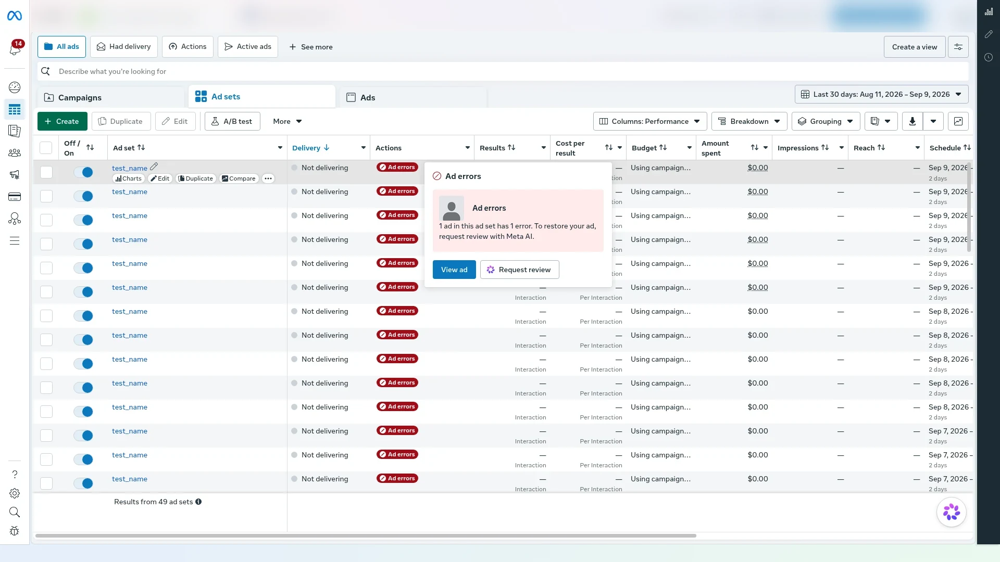
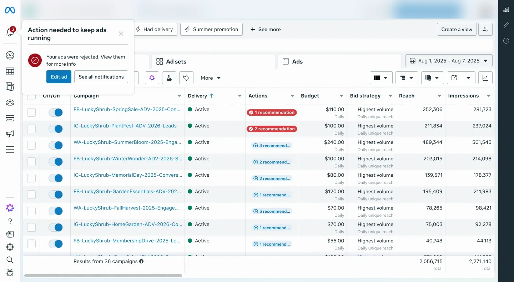
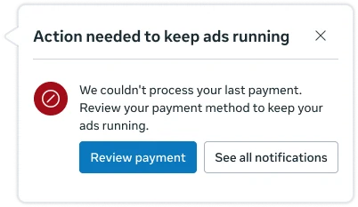
Lead Product Designer, 3 weeks: audit, interaction & visual design, prototype, eligibility rule
PM, content designer, product designer, engineer, data analyst
+0.05% total revenue from unblocked spend
Positive revenue signal at 10%; ramping to 30%
In one line
An ad stops running at 2:40 on a Friday afternoon. The money stops with it.
Everything needed to fix it already existed. This is a case study about moving one thing: the moment of delivery.
Figures are rounded. Volumes, internal names and account details are omitted or blurred.
The problem
In Facebook Ads Manager, a rejected ad stops delivering immediately. The only place to act on it was a passive status chip in a table, painted at page load.
A media buyer has eleven client accounts open and a weekend sale going live in two hours. One ad was rejected forty minutes ago.
Nothing has told her. The spend column reads $0.00, and by Monday the window the ad was built for has closed.
She is not inattentive. She is working.
To find out, she had to be on that view, spot the chip, and hover it. A mid-session rejection announced nothing.
Research & discovery
I expected the data to show that fixing a rejection was too hard. It showed the opposite.
"How do we make fixing easier?"
"How does the advertiser find out in time?"
Exploration
Before drawing a screen, I audited every existing message surface against two requirements: can it carry an ad-level alert, and can it fire live?
Six failed at least one. That turned "I'd like a new surface" into a documented gap.
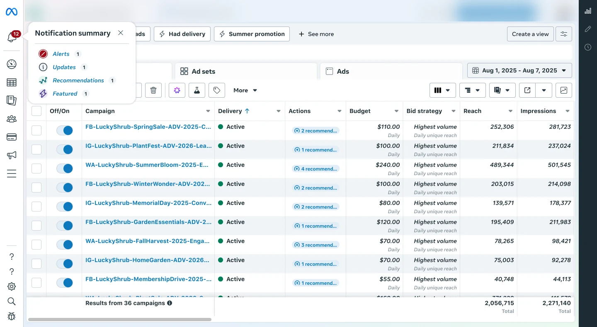
The bell shows how many things are waiting, not whether any cost money. A preview helps, but only if the advertiser hovers: the same discovery problem with new motion.
It became its own experiment, and its bell animation became the first beat of option 3.
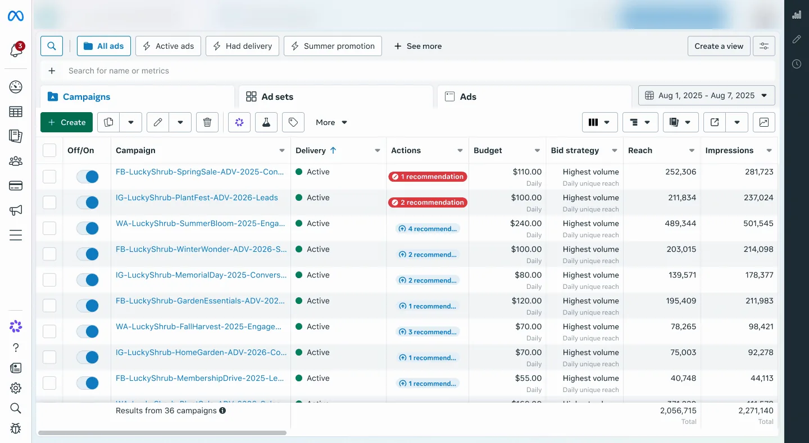
The most precise placement, and the one I expected to recommend. In motion, it landed over the data being read and still only worked on that view. A card that can appear anywhere is also harder to govern.
The option I was most confident about is the one the prototype killed.
Same bell, same card, ~0.9s apart, but the second beat no longer waits for a hover. The card arrives on its own.
Anchored to the bell, it covers no work. It doesn't auto-dismiss: a message that vanishes on a timer recreates the original failure.
Final design
An interruption buys one moment of attention, and every element has to earn its place. I tried five structures. Four lost.
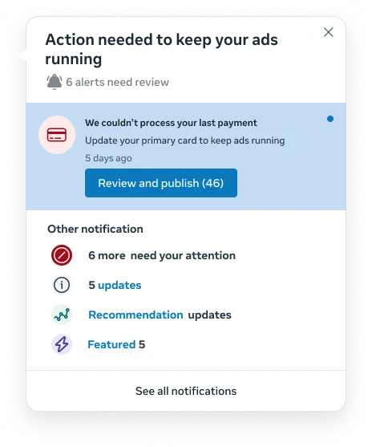
Puts a spend-blocking error next to routine recommendations, breaking the critical-only rule.
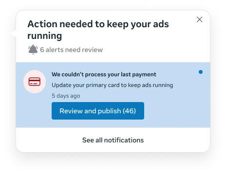
Repeats the bell's mistake, quantity without severity, inside the surface built to fix it.
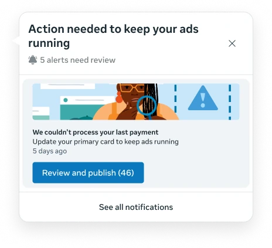
Slows comprehension, and decoration is the signature of the promotional channel advertisers already dismiss.
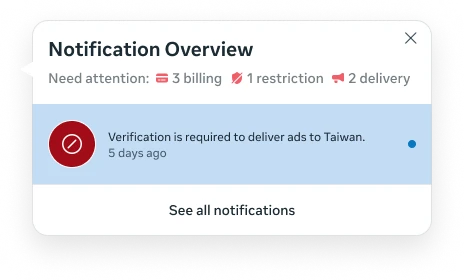
A dashboard, not an alert. It leaves the triage to the advertiser.
A plain-language title, the specific error, one action to fix it, and one route to everything else. No counts, no categories, no decoration.
Everything I removed asked the advertiser to make a decision other than the one that recovers their spend.
Click a point to see where the new card borrows from the tray.
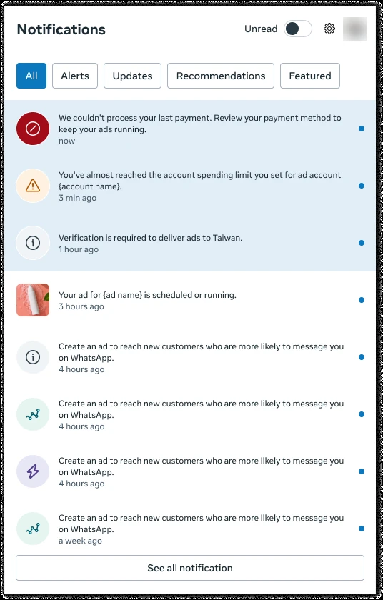
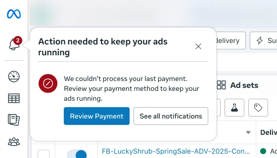
Announced
role="alert" announces it without moving focus.
Keyboard
Visible focus. Esc dismisses.
Bell label
Reads "Notifications, 3 unread", not just "Notifications".
No timeouts
Nothing vanishes before it's read (WCAG 2.2.1).
Reduced motion
No bell swing or slide. The card still appears.
Detail · the bell
Before, the bell was a record, not a summons: a red count painted at page load. Now it moves the moment a critical alert is delivered.
A rejection lands mid-session. Watch the bell.
Your ad isn't delivering. Update the creative.
Edit adSame event. Watch the bell.
One swing is easy to miss; a loop gets ignored. The proposal: a few decaying rings, then silence.
On delivery.
A deliberate second bid.
Past this, more motion costs goodwill.
The badge and the row chip hold the record.
Before & after
Nothing changed except the moment the advertiser finds out.
A chip painted at page load. A mid-session rejection announces nothing.
The bell rings, then the card names the problem, with the fix one click away.
| Before | After | |
|---|---|---|
| When it arrives | At page load only | The moment it happens |
| What it takes to notice | Be on the view, find the row, hover the chip | Nothing: it is delivered |
| What it tells you | That something is wrong | Which ad, what is wrong, what to do |
| Mid-session rejection | Silent until reload | Announced immediately |
| Attention cost | None: fully passive | One interruption, capped per session, dismissible |
| The existing chip | Stays | Stays: the card routes into it, and it clears on resolution |
The risk
I was asking permission to interrupt people. My job wasn't to out-argue that caution, but to give it something enforceable to hold me to.
Eligibility is bounded by rule, not by demand.
Try it live
A timing argument has to be felt: a static frame can't show whether an interruption feels like help or an ambush.
Wait a few seconds after load: the bell rings, then the card arrives beside it and stays until you act or dismiss it.
Timing, dismiss and persistence, in code.
Delays and offsets, not "a short pause."
What could be reused, which set the low cost.
Written as rules, so they could ship as real constraints.
Approval
Governance approved a single-arm experiment on ad rejection only, starting with 10% of advertisers, with the partner team's metrics as rollback conditions.
If clicks rise and resolution stays flat, that is noise, not value, and we do not ship it.
Product management
Split my scope into two hypotheses. The biggest improvement, and not my idea.
Data analysis
Turned a hunch into a funnel and found the segment we designed for.
Content design
Owned the voice and made the rule auditable.
Engineering
Kept the cost honest by composing existing pieces.
Partner team
Owned the existing chip. Their metrics became our guardrails.
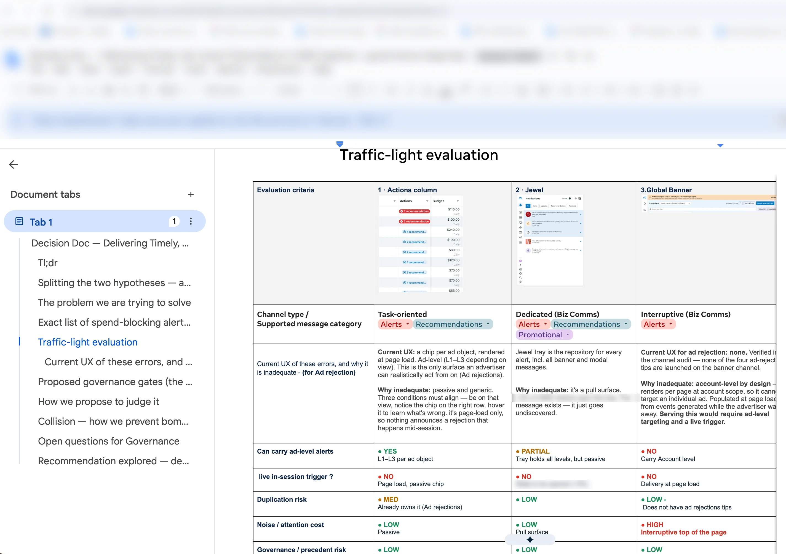
A cross-functional group can't align on a Figma file, so the recommendation travelled as a decision doc. Each reader needed something different:
Outcome
A 3-week test with 10% of advertisers showed a positive revenue signal, and governance approved ramping to 30%. The goal remains +0.05% total revenue.
The 10% result is directional; the 30% ramp tests the +0.05% target.
lift in total revenue
Scope & reflections
The first signal is positive, but it's early: 10% of advertisers over 3 weeks. The 30% ramp is where it has to hold.
The eligibility rule was harder and more valuable than the card. An interruptive pattern without an enforceable limit eventually becomes the noise it was built to cut through.
Naming the result that would make me abandon my own recommendation is what earned it credibility.
I came in assuming a usability problem in the fix flow. The data said discovery, and that the people who most needed help were the most trained to ignore us.
This case rests on behavioural data and prototype reviews inside the team. Next, I'd watch high-spend advertisers meet the card mid-task, to validate the ~0.9s timing with the people it interrupts.